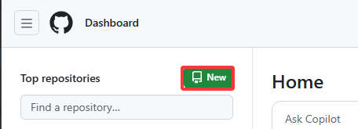

前言
本文主要介绍如何使用hexo并搭配GitHub Pages 来快速搭建个人blog并使用hexo-reimu主题来个性化个人博客。
从介绍什么是hexo框架，如何安装、创建环境，到常用指令的介绍、GitHub Pages的部署、reimu主题的使用
什么是hexo？
引用hexo官网的介绍：A fast, simple & powerful blog framework, powered by Node.js
Hexo 实际上就是一个基于Node.js的网页框架创建器，拥有以下特点：
- 超快编译速度
- 支持 Markdown
- 支持一键部署到GitHub Pages等支持静态网页部署的网站
- 插件生态丰富
本地部署
前置条件
在开始安装hexo到本地前，请确保电脑安装下列工具：
Node.js
Git
Node.js
- node.js:提供 npm 来安装所需的套件。这里可选择安装v22.21.0 LTS 版本
Hexo 官网建议使用Node.js 10.0 及以上版本，若不确定下载哪个版本，可在终端输入npm versin查看版本号
Git
- Git用来将档案发布到GitHub Page
Git和Github区别：Git 是用来版本控制的程序；GitHub 则是提供存放Git Repository 的服务，让使用者能在视觉化界面进行管理
Hexo 环境构建
完成前置作业后，接着就要来建立Hexo 环境，步骤如下：
Step1. 安装Hexo
在目标文件夹启动终端，并输入以下指令来安装Hexo：
1 | $ npm install hexo-cli -g |
安装完后，可输入 hexo version 或 hexo -v 查看Hexo 版本，确认是否有安装成功
(注：如果提示command not found 则在命令前加npx,如 npx hexo version)
Step2. 初始化Hexo
接着要初始化Hexo，这里有两种做法：
- 直接输入下面指令，会自动于所在目录建立一个新文件夹以操作Hexo。记得将括号内修改成自己的文件夹名称，若不指定文件夹名称，则会直接初始化当前目录：
1 | $ hexo init < 文件夹名称 > |
(如果使用npx hexo init会遇到初始化当前目录失败的情况，原因是npx 会在启动终端的文件夹创建 caches ，导致hexo的空文件夹检查失败，这种情况下就必须指定一个不同的文件夹)
- 也可以先建立好文件夹，并在该文件夹输入上述指令，同样能进行初始化。可使用cd 指令来切换路径：
1 | $ cd < 文件夹路径 > |
Step3. 在文件夹安装所需文件
cd到目标文件夹，并执行：
1 | npm install |
安装完成之后应该会有如下文件
1 | . |
_config.yml
- 有关网站配置的档案，可修改各种配置设定。例如：网站标题、网站的网址、使用主题名称等等
- 详细内容可以参考 官方文件
package.json
- 记录所有载入的应用程序的资料
scaffolds 模板
- 当我们建立新文章时，Hexo 会根据scaffolds 中的模板建立相对应的档案
文件夹中有三种预设布局：post、page 和draft，分别对应：要发布的文章、页面、草稿
themes 主题
source 资源
- 用来存放原始文件的地方，例如Markdown、图片、各种页面（分页、关于等）
- 通常资料夹命名开头会加上底线_，例如_imgs
- 以_开头的文件，文件夹或隐藏文件会被忽略，除了_posts文件夹以外
- Markdown和HTML会被解析，并放到public 文件夹中，而其他文件则会被拷贝过去
常用指令
部署相关
1 | $ hexo clean #网页文件清除,可以简写为 hexo cl |
new 新增文章
1 | $ hexo new [layout] <title> |
- 如果没有设定layout，则会使用_config.yml 中的default_layout 来设定
- 如果标题有包含空格，需使用引号括住，例如" title"
- 接着可直接到/source/_posts/title.md中编辑文章内容
- 文件名称尽量以英文命名，避免出现乱码
Markdown语法参考
部署到GitHub
在架设博客之前，还必须准备一个存放网站的空间，例如架设主机，或是选择现有的平台，例如GitHub Pages 或Heroku 等，本篇使用GitHub。
接着可依照下列步骤在GitHub 新增仓库：
Step1. 注册GitHub帐号并登入
Step2. 点击 New 新增一个Repository (仓库)

Step3. 将仓库名称命名为username.github.io，username 记得改成自己的帐号名称

将文件发布到GitHub
Step1. 安装Git 相关套件：
回到hexo 文件夹，输入：
1 | $ npm install hexo-deployer-git --save |
安装部署所需套件
Step2. 修改_config.yml文件的Deployment 设定
需注意这里指的_config.yml 档案是根目录的，而不是themes 主题中的
1 | deploy: |
- type：选择部属模式，这里填git
- repo：GitHub repository 的连结，记得将username 修改成自己的帐号名称
- branch：选择分支，预设为master
Step3. 输入部署指令
1 | $ hexo d |
第一次输入可能会要求登入GitHub 帐号
通常在完成每次修改后，会依序输入clean -> generate -> deploy三行指令，避免更新不完全
这样就完成部署到GitHub 了！可在个人页面 https://username.github.io 确认是否有发布成功，预设画面如下：
这样一个博客就大功告成了。但是似乎并不是很美观，于是我们想到了使用第三方主题来美化。
theme的使用 (以hexo-reimu为例)
可以在Hexo-theme中寻找喜欢的主题来部署，本网站使用Hexo-reimu，故使用Reimu为例
安装
使用 npm
1 | npm install hexo-theme-reimu --save |
或直接克隆仓库至 /themes 文件夹下并重命名为 reimu
1 | git clone https://github.com/D-Sketon/hexo-theme-reimu.git |
并修改 _config.yml 中的 theme
1 | theme: reimu |
初始化
参照仓库文档和 _example，在 source 中分别建立 _data、about 和 friend 文件夹 （注意：是博客根目录下的 source 文件夹，而不是主题中的 source ）
基本结构
_data
avatar文件夹中存储作者头像，默认命名avatar.webp，可在内层_config.yml中做如下配置
1 | avatar: "avatar.webp" # 默认就是在avatar文件夹内寻找，请不要包含路径，否则会404 |
covers文件夹中存储文章封面covers.yml中存储文章封面 url
about
index.md 作为关于页面
friend
index.md 作为友链页面，在 _data.yml 中填入友链信息即可在页面上显示对应好友卡片
封面、头图和 favicon
封面
封面显示逻辑如下
- 如果文章的 Front matter 中包含 cover 的 url，则该文章头图和首页缩略图均显示该 url
1 |
|
- 如果文章的 Front matter 中包含 cover 为
false，则该文章不显示头图（首页上仍然是随机图片）
1 |
|
- 如果文章的 Front matter 中包含 cover 为
rgb(xxx,xxx,xxx)，则该文章头图为对应的渐变纯色（首页上仍然是随机图片）
1 |
|
- 否则查找
covers文件夹和covers.yml，并从中随机挑选图片 - 若上述文件均不存在，则显示头图
头图
头图保存于 themes/reimu/source/images/banner.webp，可在内层 _config.yml 中修改
1 | banner: "/images/banner.webp" |
favicon
favicon 保存于 themes/reimu/source/images/favicon.ico，可在内层 _config.yml 中修改路径
1 | favicon: "/images/favicon.ico" |
置顶
在文章的 Front-matter 中添加 sticky: true
1 |
|
主题
- 通过文章头图的主色调动态生成主题色
1 | material_theme: |
- 手动定制主题颜色
hexo-theme-reimu 主题支持通过 CSS 变量定制主题颜色
位于_config.yaml中：
1 | internal_theme: |
注意；上述两项存在一定程度的冲突，尚未加载出图片时使用手动定制的颜色，加载后动态生成的主题色会覆盖手动颜色
更多更改见GitHub
修改完以上一个个性化的博客就基本完成了
结语
之所以会对 Hexo 产生兴趣，是因为社团有创建个人博客的要求，上网查相关的文章，发现许多推荐 Hexo 的文章，可以在快速架设个人博客的同时支持高度的自定义
实际在使用 Hexo 框架时，真的比想象中还要方便许多！除了能够快速套用主题，也能自己修改想要的样式，能够玩出许多变化。目前这个网站还很粗糙，之后我会继续摸索有哪些功能，同时也慢慢丰富自己博客。